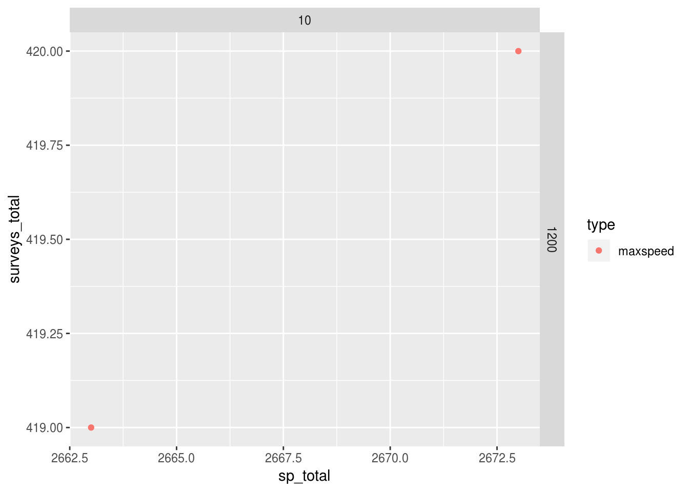
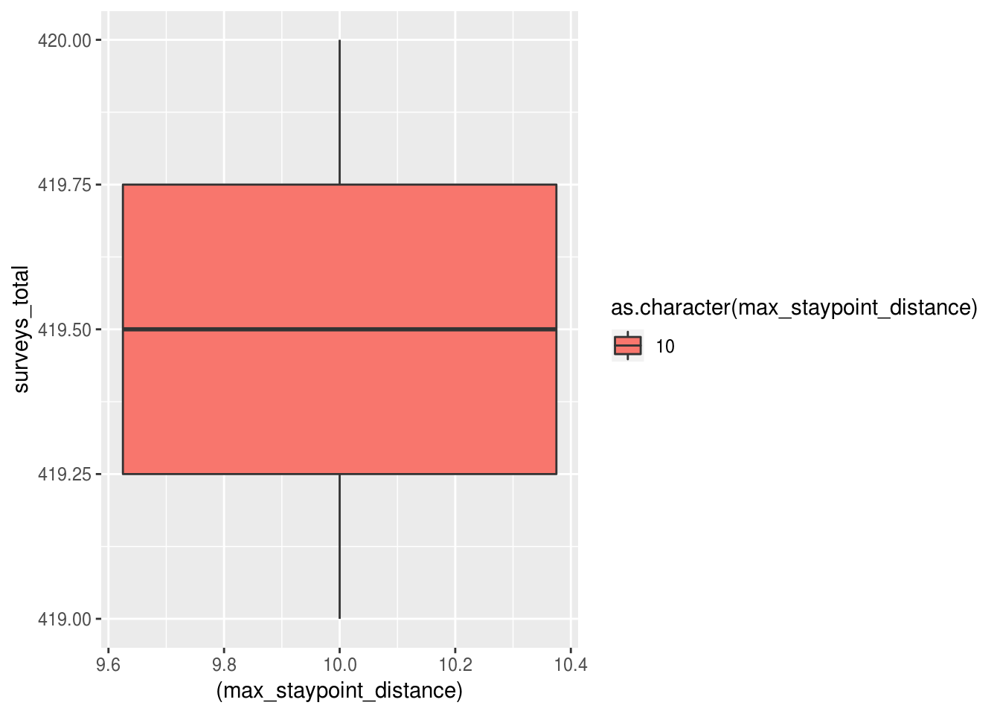
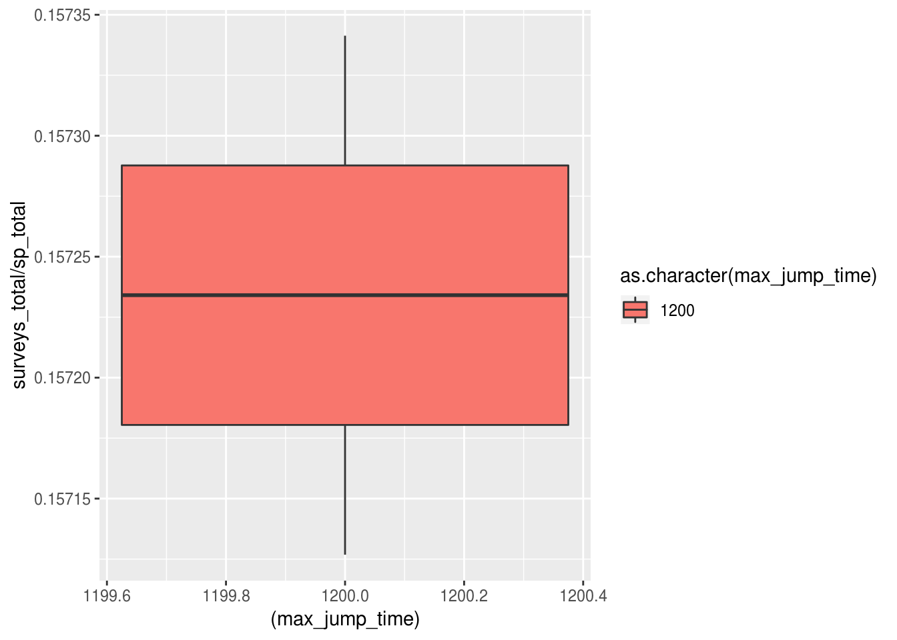
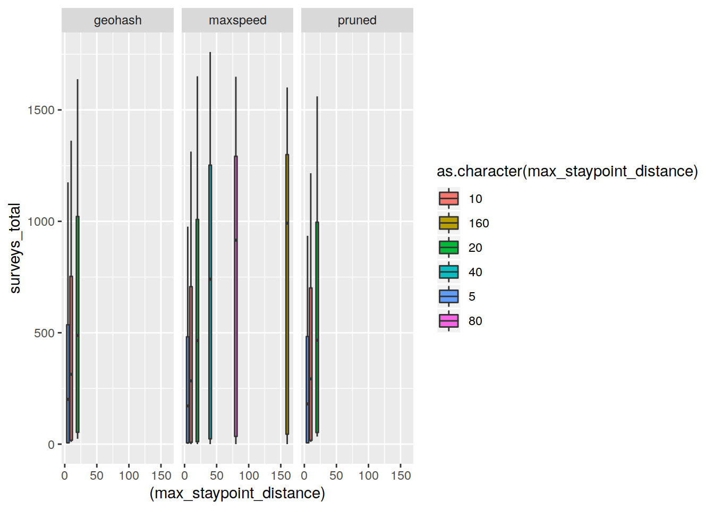
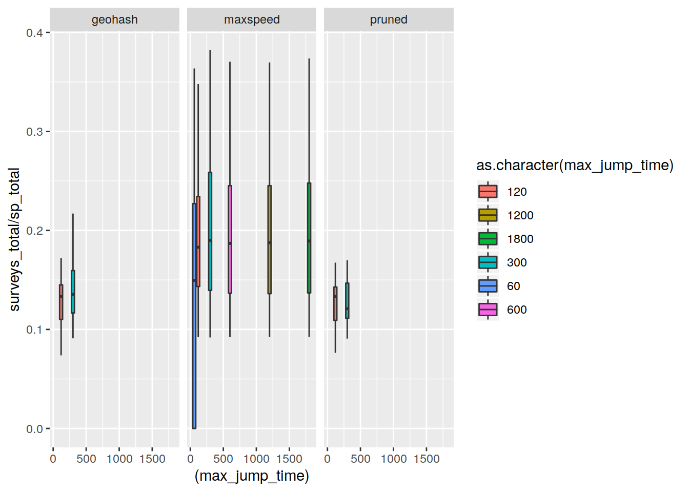
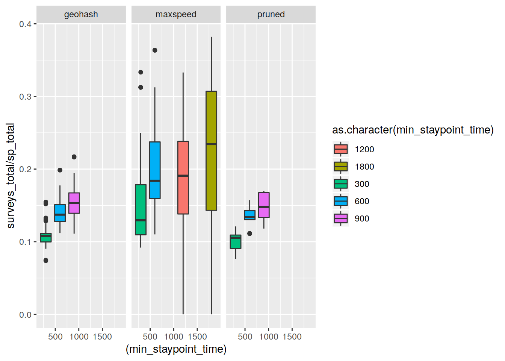

Staypoint estimate analysis
Last updated: 2019-09-03
Checks: 5 2
Knit directory: initialAnalysis/
This reproducible R Markdown analysis was created with workflowr (version 1.4.0.9001). The Checks tab describes the reproducibility checks that were applied when the results were created. The Past versions tab lists the development history.
The R Markdown file has unstaged changes. To know which version of the R Markdown file created these results, you’ll want to first commit it to the Git repo. If you’re still working on the analysis, you can ignore this warning. When you’re finished, you can run wflow_publish to commit the R Markdown file and build the HTML.
Great job! The global environment was empty. Objects defined in the global environment can affect the analysis in your R Markdown file in unknown ways. For reproduciblity it’s best to always run the code in an empty environment.
The command set.seed(20180727) was run prior to running the code in the R Markdown file. Setting a seed ensures that any results that rely on randomness, e.g. subsampling or permutations, are reproducible.
Great job! Recording the operating system, R version, and package versions is critical for reproducibility.
- clean_4square_locations
- find_homes
- load_data
- load_data_cacheable
- load_staypoint_file_list
- session-info-chunk-inserted-by-workflowr
- show_staypoints_geography
To ensure reproducibility of the results, delete the cache directory evaluate_staypoint_estimates_cache and re-run the analysis. To have workflowr automatically delete the cache directory prior to building the file, set delete_cache = TRUE when running wflow_build() or wflow_publish().
Great job! Using relative paths to the files within your workflowr project makes it easier to run your code on other machines.
Great! You are using Git for version control. Tracking code development and connecting the code version to the results is critical for reproducibility. The version displayed above was the version of the Git repository at the time these results were generated.
Note that you need to be careful to ensure that all relevant files for the analysis have been committed to Git prior to generating the results (you can use wflow_publish or wflow_git_commit). workflowr only checks the R Markdown file, but you know if there are other scripts or data files that it depends on. Below is the status of the Git repository when the results were generated:
Ignored files:
Ignored: .drake/
Ignored: .drake_history/
Ignored: analysis/analyse_staypoint_estimates_cache/
Ignored: analysis/evaluate_staypoint_estimates_cache/
Ignored: analysis/exploreStaypointBase_cache/
Ignored: analysis/explore_locations_cache/
Ignored: analysis/explore_staypoint_base_data_quality_check_cache/
Ignored: analysis/mark_staypoint_systematic_cache/
Ignored: data/
Ignored: data_fast
Ignored: lib/keys.R
Ignored: staypoint_estimation.log
Unstaged changes:
Modified: analysis/evaluate_staypoint_estimates.Rmd
Note that any generated files, e.g. HTML, png, CSS, etc., are not included in this status report because it is ok for generated content to have uncommitted changes.
These are the previous versions of the R Markdown and HTML files. If you’ve configured a remote Git repository (see ?wflow_git_remote), click on the hyperlinks in the table below to view them.
| File | Version | Author | Date | Message |
|---|---|---|---|---|
| Rmd | 5af9b9d | Dennis Wollersheim | 2019-09-02 | first Rmd changes |
| html | 5af9b9d | Dennis Wollersheim | 2019-09-02 | first Rmd changes |
| Rmd | 6c194cb | Dennis Wollersheim | 2019-08-19 | get timestamp range for each staypoint |
| Rmd | 3f692c3 | Dennis Wollersheim | 2019-08-13 | clustermq, drake |
| Rmd | efa6f2d | Dennis Wollersheim | 2019-08-08 | mostly working on Shiny |
| Rmd | b8786f8 | Dennis Wollersheim | 2019-07-31 | fixed remaining time_stamp renames, and eliminated refereences to df_best_location |
| Rmd | edda327 | Dennis Wollersheim | 2019-07-30 | move to alf |
Determine which staypoint parameters work the best
staypoint parameters
The staypoint determination algorithm uses 4 variables; - min_staypoint_time - minimum time, in minutes, that must stay within max_staypoint_distance * max_jump_time - maximum time, in minutes, between readings
Tests for good staypoint parameters
- See if they match the survey data timestamps - we assume that survey data timestamps correspond to staypoints
- see if they match drinking establishment locations
- see if they match home locations - todo later 4
options(warn=-1)
library( knitr )
opts_chunk$set(cache=TRUE, autodep=TRUE, eval=TRUE)
library(tidyverse)
library(drake)# load in the individual locations information
loadd(df_all_staypoints_matched ) Reports - Staypoints evaluated according to geography
df_all_staypoints_matched %>%
group_by( filename) %>%
summarise( sp_total = n(), surveys_total= sum(!is.na( which))) %>%
mutate( rate = surveys_total / sp_total) %>%
arrange( desc( rate )) %>%
separate( col=filename,
into=c(NA, NA, qc(type, min_staypoint_time, max_jump_time, max_staypoint_distance, rest)),
sep='_',
convert=TRUE,
extra='merge',
remove=FALSE) %>%
{ . } -> df_geography_matches
df_geography_matches %>%
filter( max_staypoint_distance < 40 ) %>%
filter( max_jump_time > 120 ) %>%
ggplot( aes( sp_total, surveys_total, color=type )) +
geom_point() +
facet_grid( min_staypoint_time ~ max_staypoint_distance)
| Version | Author | Date |
|---|---|---|
| 5af9b9d | Dennis Wollersheim | 2019-09-02 |
df_geography_matches %>%
ggplot( aes(x=(max_jump_time), y=surveys_total, fill=as.character(max_jump_time) )) +
geom_boxplot()
| Version | Author | Date |
|---|---|---|
| 5af9b9d | Dennis Wollersheim | 2019-09-02 |
df_geography_matches %>%
ggplot( aes(x=(max_staypoint_distance), y=surveys_total, fill=as.character( max_staypoint_distance) )) +
geom_boxplot()
| Version | Author | Date |
|---|---|---|
| 5af9b9d | Dennis Wollersheim | 2019-09-02 |
df_geography_matches %>%
ggplot( aes(x=(min_staypoint_time), y=surveys_total/sp_total, fill=as.character( min_staypoint_time) )) +
geom_boxplot()
| Version | Author | Date |
|---|---|---|
| 5af9b9d | Dennis Wollersheim | 2019-09-02 |
df_geography_matches %>%
ggplot( aes(x=(max_jump_time), y=surveys_total/sp_total, fill=as.character(max_jump_time) )) +
geom_boxplot()
| Version | Author | Date |
|---|---|---|
| 5af9b9d | Dennis Wollersheim | 2019-09-02 |
df_geography_matches %>%
ggplot( aes(x=(max_staypoint_distance), y=surveys_total/sp_total, fill=as.character( max_staypoint_distance) )) +
geom_boxplot()
| Version | Author | Date |
|---|---|---|
| 5af9b9d | Dennis Wollersheim | 2019-09-02 |
df_geography_matches %>%
ggplot( aes(x=(min_staypoint_time), y=surveys_total/sp_total, fill=as.character( min_staypoint_time) )) +
geom_boxplot()
| Version | Author | Date |
|---|---|---|
| 5af9b9d | Dennis Wollersheim | 2019-09-02 |
df_geography_matches %>%
ggplot( aes(x=(min_staypoint_time), y=surveys_total/sp_total, fill=as.character( min_staypoint_time) )) +
geom_boxplot() +
facet_wrap( .~max_staypoint_distance)
| Version | Author | Date |
|---|---|---|
| 5af9b9d | Dennis Wollersheim | 2019-09-02 |
df_geography_matches %>%
ggplot( aes(x=(max_jump_time), y=surveys_total, fill=as.character(max_jump_time) )) +
geom_boxplot() + facet_wrap(~type)df_geography_matches %>%
ggplot( aes(x=(max_staypoint_distance), y=surveys_total, fill=as.character( max_staypoint_distance) )) +
geom_boxplot() + facet_wrap(~type)
df_geography_matches %>%
ggplot( aes(x=(min_staypoint_time), y=surveys_total/sp_total, fill=as.character( min_staypoint_time) )) +
geom_boxplot()df_geography_matches %>%
ggplot( aes(x=(max_jump_time), y=surveys_total/sp_total, fill=as.character(max_jump_time) )) +
geom_boxplot() + facet_wrap(~type)
df_geography_matches %>%
ggplot( aes(x=(max_staypoint_distance), y=surveys_total/sp_total, fill=as.character( max_staypoint_distance) )) +
geom_boxplot() + facet_wrap(~type)df_geography_matches %>%
ggplot( aes(x=(min_staypoint_time), y=surveys_total/sp_total, fill=as.character( min_staypoint_time) )) +
geom_boxplot() + facet_wrap(~type)
df_geography_matches %>%
ggplot( aes(x=(min_staypoint_time), y=surveys_total/sp_total, fill=as.character( min_staypoint_time) )) +
geom_boxplot() +
facet_grid( type~max_staypoint_distance)
sessionInfo()R version 3.6.1 (2019-07-05)
Platform: x86_64-pc-linux-gnu (64-bit)
Running under: Ubuntu 18.04.3 LTS
Matrix products: default
BLAS: /usr/lib/x86_64-linux-gnu/openblas/libblas.so.3
LAPACK: /usr/lib/x86_64-linux-gnu/libopenblasp-r0.2.20.so
locale:
[1] LC_CTYPE=en_AU.UTF-8 LC_NUMERIC=C
[3] LC_TIME=en_AU.UTF-8 LC_COLLATE=en_AU.UTF-8
[5] LC_MONETARY=en_AU.UTF-8 LC_MESSAGES=en_AU.UTF-8
[7] LC_PAPER=en_AU.UTF-8 LC_NAME=C
[9] LC_ADDRESS=C LC_TELEPHONE=C
[11] LC_MEASUREMENT=en_AU.UTF-8 LC_IDENTIFICATION=C
attached base packages:
[1] stats4 parallel stats graphics grDevices utils datasets
[8] methods base
other attached packages:
[1] tidyselect_0.2.5 sp_1.3-2 tibbletime_0.1.2
[4] glue_1.3.1 zoo_1.8-6 geosphere_1.5-7
[7] keyring_1.1.0 RPostgreSQL_0.6-2 DBI_1.0.0
[10] multidplyr_0.0.0.9000 IRanges_2.19.10 S4Vectors_0.23.18
[13] BiocGenerics_0.31.5 fuzzyjoin_0.1.5 DataCache_0.9.1
[16] wrapr_1.8.9 readstata13_0.9.2 lubridate_1.7.4
[19] magrittr_1.5 workflowr_1.4.0.9001 tsibble_0.8.3
[22] drake_7.5.2 forcats_0.4.0 stringr_1.4.0
[25] dplyr_0.8.3 purrr_0.3.2 readr_1.3.1
[28] tidyr_0.8.3 tibble_2.1.3 ggplot2_3.2.1
[31] tidyverse_1.2.1 knitr_1.24 nvimcom_0.9-82
loaded via a namespace (and not attached):
[1] httr_1.4.1 jsonlite_1.6 modelr_0.1.5 assertthat_0.2.1
[5] base64url_1.4 cellranger_1.1.0 yaml_2.2.0 pillar_1.4.2
[9] backports_1.1.4 lattice_0.20-38 digest_0.6.20 rvest_0.3.4
[13] colorspace_1.4-1 htmltools_0.3.6 plyr_1.8.4 pkgconfig_2.0.2
[17] broom_0.5.2 haven_2.1.1 scales_1.0.0 whisker_0.3-2
[21] git2r_0.26.1 txtq_0.1.4 generics_0.0.2 withr_2.1.2
[25] lazyeval_0.2.2 cli_1.1.0 crayon_1.3.4 readxl_1.3.1
[29] evaluate_0.14 storr_1.2.1 fs_1.3.1 nlme_3.1-141
[33] anytime_0.3.5 xml2_1.2.2 tools_3.6.1 hms_0.5.0
[37] munsell_0.5.0 compiler_3.6.1 rlang_0.4.0 grid_3.6.1
[41] rstudioapi_0.10 igraph_1.2.4.1 labeling_0.3 rmarkdown_1.14
[45] gtable_0.3.0 codetools_0.2-16 reshape2_1.4.3 R6_2.4.0
[49] zeallot_0.1.0 filelock_1.0.2 rprojroot_1.3-2 stringi_1.4.3
[53] Rcpp_1.0.2 vctrs_0.2.0 xfun_0.8